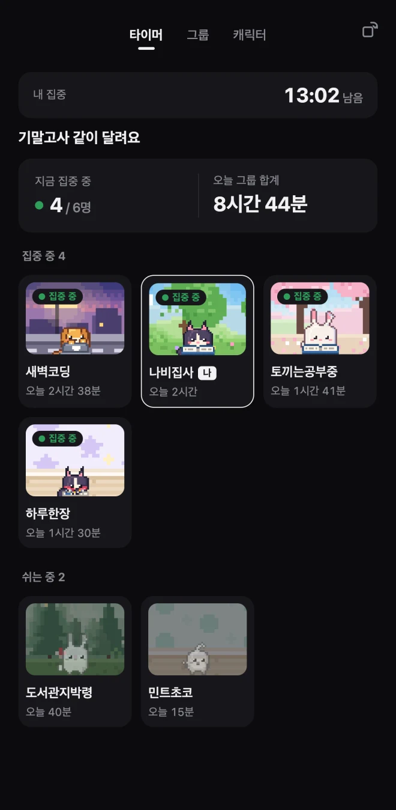
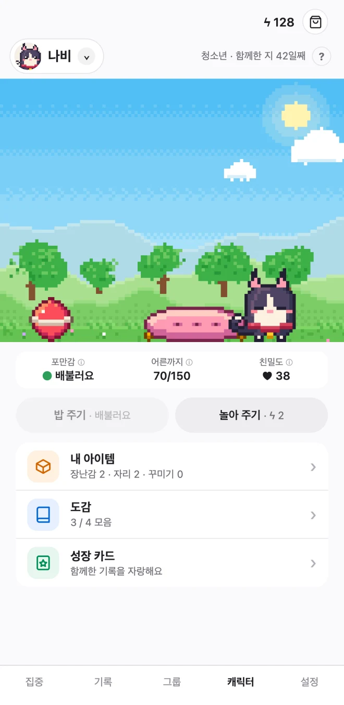
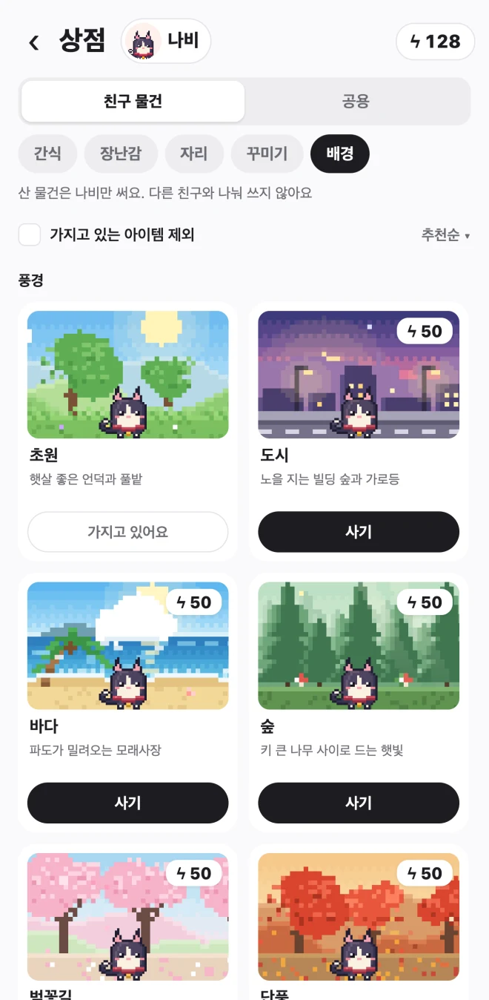

바탕화면 펫
일하는 동안, 화면 한쪽에 작은 친구
Mac과 Windows에서는 펫이 바탕화면을 걷고, 졸고, 내 옆에서 집중해요. 아래 바탕화면에서 네 친구를 바꿔 띄우고, 타이머를 켜거나 함께 놀아 보세요.
바탕화면 체험을 준비하고 있어요.
성장 도감
집중해서 모은 에너지로 돌보면, 아기에서 어른까지 네 단계로 자라요.
모바일 · 데스크톱 연동
밖에서 만난 친구, 집에서도 그대로
두 기기에서 같은 뽀모야 계정으로 로그인해요. 카페에서 집중해 모은 에너지로 집에 돌아와 컴퓨터에서 친구에게 밥을 줄 수 있어요.
iPhone · iPad
타이머를 켜고 눈앞의 일에 집중해요.
Mac · Windows
작업하면서 바탕화면에서 같은 친구를 돌봐요.
같은 계정에 펫 · 돌봄에너지 · 집중 기록이 이어져요
집중 타이머
오늘 할 일에 맞춰, 펫도 같이 움직여요
뽀모도로 타이머로 시간을 정하거나 스톱워치로 시작해요. 집중 분류마다 펫의 동작을 골라 두면, 공부하는 날도 스트레칭하는 날도 함께할 수 있어요.
- 공부
- 노트북 작업
- 운동
- 명상
그룹 집중
멀리 있어도
같은 공부방처럼
친구와 그룹을 만들거나 공개 그룹에 들어가 보세요. 각자 타이머를 켜고, 화면 속 펫을 보며 누구와 함께 집중하고 있는지 알 수 있어요.
- 지금 누가 집중하고 있나요?집중 중인 친구와 쉬는 중인 친구를 펫의 모습으로 확인해요.
- 함께 쌓은 시간을 한눈에오늘, 이번 주, 이번 달 집중 시간과 그룹 순위를 살펴봐요.

펫 키우기
첫 친구를 고르는 순간부터 내 취향대로
고양이, 강아지, 토끼, 병아리 중 한 마리와 시작해요. 집중해서 모은 돌봄에너지로 새 친구를 데려오고, 펫마다 다른 모습과 공간을 만들어 보세요.
같은 펫도 우리 집에선 조금 달라요
- 상점에서 새 친구 만나기곰도리처럼 상점에서만 만날 수 있는 친구를 돌봄에너지로 데려올 수 있어요.
- 작은 방과 옷장 꾸미기쉬는 자리와 장난감을 놓고, 배경을 바꿔요. 모자, 안경, 옷도 친구마다 골라 입혀요.
- 자라는 순간 모아 두기도감에서 만난 친구와 성장한 모습을 찾아보고, 특별한 날엔 성장 카드를 남겨요.


FAQ
자주 묻는 질문
설치와 기기 연동
어떤 기기에서 쓸 수 있나요?
Mac·iPhone·iPad는 App Store, 갤럭시와 그 외 Android 기기는 Google Play에서 받을 수 있어요. Windows PC는 설치 파일(.exe)을 받아 주세요.
폰에서 키운 펫을 PC에서도 만날 수 있나요?
네. Apple 또는 Google로 로그인할 때 두 기기에서 같은 뽀모야 계정을 쓰면 펫, 돌봄에너지, 집중 기록이 이어져요. PC에서 진행 중인 집중도 모바일에서 확인할 수 있어요.
Mac에서 앱을 어디에서 찾나요?
Mac에서는 메뉴 막대 오른쪽의 뽀모야 아이콘에서 설정을 열거나 앱을 종료할 수 있어요. 펫은 화면 아래쪽에서 만날 수 있어요.
타이머와 그룹
친구는 어떻게 초대하나요?
그룹 탭에서 새 그룹을 만들어요. 우리끼리만 쓰고 싶다면 비공개로 만든 뒤 친구에게 초대 코드를 보내세요. 친구는 그룹 탭에서 코드로 들어올 수 있어요.
친구와 타이머를 동시에 시작해야 하나요?
각자 편한 시간에 시작하면 돼요. 그룹의 ‘지금’ 화면에서 서로의 집중·휴식 상태를 보고, 순위에서 오늘·이번 주·이번 달 집중 시간을 확인할 수 있어요.
같은 그룹 사람에게 무엇이 보이나요?
닉네임, 펫의 모습, 집중·휴식 상태, 기간별 집중 시간 합계가 보여요. 이메일이나 분류 이름, 개별 집중 내역은 그룹 화면에 표시되지 않아요.
집중 25분, 휴식 5분으로 반복할 수 있나요?
네. 집중 화면에서 반복 모드를 켜고 집중과 휴식 길이를 정하세요. 시간을 정하기 어려운 날엔 스톱워치로 시작할 수도 있어요.
집중 중에 다른 앱을 써도 되나요?
모바일의 기본 설정에서는 다른 앱으로 이동하면 집중이 잠시 멈춰요. 자료를 찾아야 하는 날엔 집중 화면에서 ‘다른 앱 허용’을 켜고 시작하세요.
펫과 기록
돌봄에너지는 어떻게 쓰나요?
집중해서 모은 에너지로 밥을 주고 놀아 줄 수 있어요. 상점에서 새 펫을 데려오거나 옷과 배경, 장난감을 고를 때도 같은 에너지를 써요.
공부와 운동을 따로 기록할 수 있나요?
네. 집중 분류를 만들고 색을 지정해 두면 기록 탭에서 분류별 시간을 확인할 수 있어요. 날짜별로 함께 집중한 펫도 볼 수 있어요.
작업 중에는 펫을 조용하게 둘 수 있나요?
PC 설정에서 펫의 활동을 끄면 제자리에 머물러요. 펫을 띄울 모니터도 설정에서 고를 수 있어요.
다른 질문이 있나요? 지원 페이지에서 문의할 수 있어요.
뽀모야 받기
기기를 골라 첫 친구를 만나 보세요.